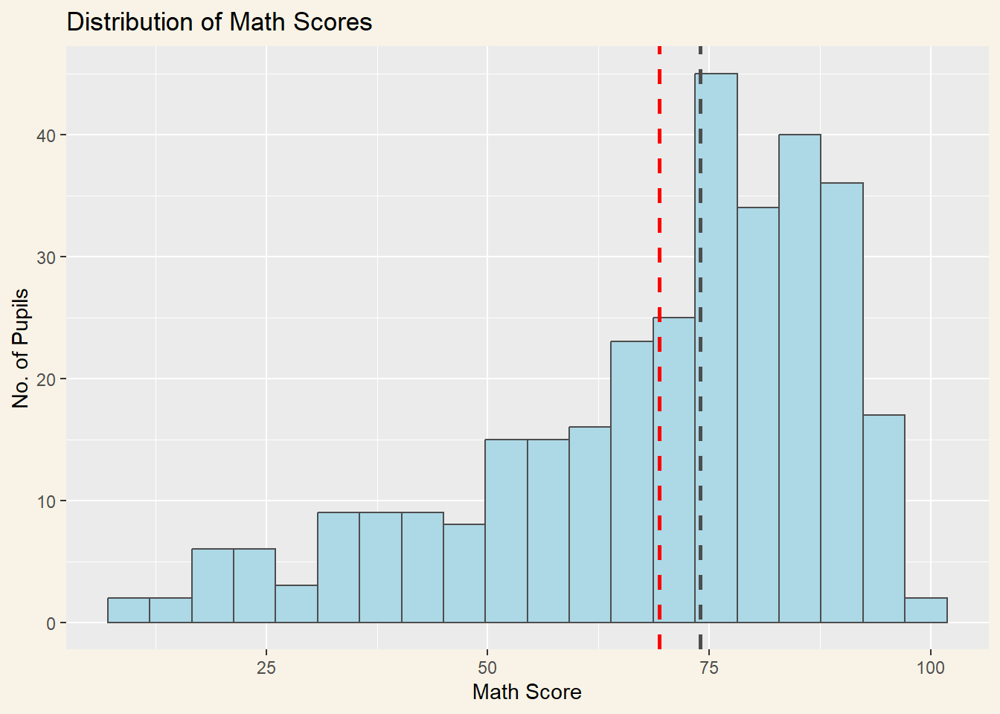

pacman::p_load(tidyverse, forcats)Hands on Exercise 1
Getting Started
Load and Install R packages
Importing the data
exam_data <- read_csv("data/Exam_data.csv")Rows: 322 Columns: 7
── Column specification ────────────────────────────────────────────────────────
Delimiter: ","
chr (4): ID, CLASS, GENDER, RACE
dbl (3): ENGLISH, MATHS, SCIENCE
ℹ Use `spec()` to retrieve the full column specification for this data.
ℹ Specify the column types or set `show_col_types = FALSE` to quiet this message.summary(exam_data) ID CLASS GENDER RACE
Length:322 Length:322 Length:322 Length:322
Class :character Class :character Class :character Class :character
Mode :character Mode :character Mode :character Mode :character
ENGLISH MATHS SCIENCE
Min. :21.00 Min. : 9.00 Min. :15.00
1st Qu.:59.00 1st Qu.:58.00 1st Qu.:49.25
Median :70.00 Median :74.00 Median :65.00
Mean :67.18 Mean :69.33 Mean :61.16
3rd Qu.:78.00 3rd Qu.:85.00 3rd Qu.:74.75
Max. :96.00 Max. :99.00 Max. :96.00 Plotting a simple bar chart
ggplot(data = exam_data,
aes(x = RACE)) +
geom_bar()+
labs(x = "Race",
y = "Number of Students",
title = "Race Distribution of Exam Data") +
theme_grey() +
theme(plot.background=element_rect(fill="#F8F3E6",colour="#F8F3E6"))Plotting Practice
1: Working with Themes
ggplot(data = exam_data,
aes(x = RACE)) +
geom_bar() +
coord_flip()+
theme_minimal() +
theme(
panel.background=element_rect(fill='lightblue', colour='lightblue'),
panel.border=element_blank(),
panel.grid.major=element_line(linewidth=0.2, linetype='solid', colour="white"),
panel.grid.minor=element_line(linewidth=0.2, linetype='solid', colour="white"),
plot.background=element_rect(fill="#F8F3E6",colour="#F8F3E6")
)2: Makeover Design for Pupil Count by Race
ggplot(data = exam_data,
aes(x = reorder(RACE, RACE, function(x)-length(x)))) +
geom_bar()+
ylim(0, 220) +
geom_text(stat="count",
aes(label=paste0(after_stat(count), ", ",
round(after_stat(count)/sum(after_stat(count))*100, 1), "%")),
vjust=-1) +
labs(x = "Race",
y = "No. of\nPupils") +
theme_grey() +
theme(
axis.title.y = element_text(hjust=1, angle=0),
plot.background=element_rect(fill="#F8F3E6",colour="#F8F3E6")
)exam_data %>%
mutate(RACE = fct_infreq(RACE)) %>%
ggplot(aes(x = RACE)) +
geom_bar()+
ylim(0,220) +
geom_text(stat="count",
aes(label=paste0(after_stat(count), ", ",
round(after_stat(count)/sum(after_stat(count))*100, 1), "%")),
vjust=-1) +
xlab("Race") +
ylab("No. of\nPupils") +
theme(axis.title.y=element_text(angle = 0),
plot.background=element_rect(fill="#F8F3E6",colour="#F8F3E6"))3: Makeover Design for Distribution of Math Scores
ggplot(data=exam_data,
aes(x=MATHS)) +
geom_histogram(bins=20,
color="grey30",
fill="lightblue") +
labs(x = "Math Score",
y = "No. of Pupils",
title = "Distribution of Math Scores") +
geom_vline(aes(xintercept=median(exam_data$MATHS, na.rm=T)),
color="grey30", linewidth=1, linetype="dashed") +
geom_vline(aes(xintercept=mean(exam_data$MATHS, na.rm=T)),
colour="red", linewidth=1, linetype="dashed") +
theme(plot.background=element_rect(fill="#F8F3E6",colour="#F8F3E6"))
4: Makeover Design for Distribution of English Score by Gender
eng_data <- exam_data["ENGLISH"]
ggplot(data=exam_data,
aes(x=ENGLISH, fill=GENDER)) +
geom_histogram(bins=20, data=eng_data, fill="grey", alpha=0.7, na.rm=T) +
geom_histogram(bins=20, color="black", na.rm=T) +
facet_wrap(~ GENDER) +
xlim(20,100) +
labs(x = "English Score",
y = "No. of Pupils",
title = "Distribution of English Scores by Gender") +
theme_bw() +
theme(plot.background=element_rect(fill="#F8F3E6",colour="#F8F3E6")
)5: Makeover Design for Scatterplot of English and Math Scores
ggplot(data=exam_data,
aes(x= MATHS, y=ENGLISH)) +
geom_point() +
coord_cartesian(xlim=c(0,100),
ylim=c(0,100)) +
geom_vline(aes(xintercept=50),
color="grey", linewidth=0.8, linetype="dashed") +
geom_hline(aes(yintercept=50),
color="grey", linewidth=0.8, linetype="dashed") +
labs(x = "Math Score",
y = "English Score",
title = "Correlation between English and Math Scores") +
theme_gray() +
theme(plot.background=element_rect(fill="#F8F3E6",colour="#F8F3E6"))